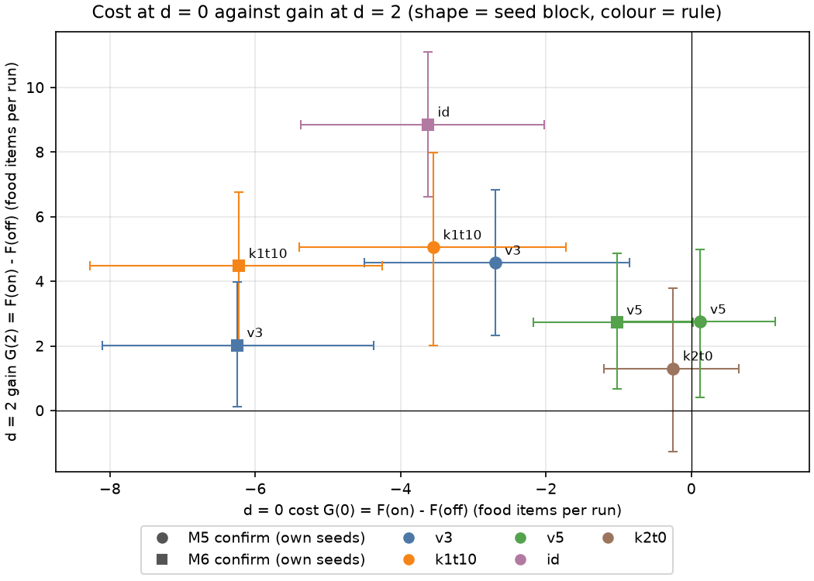
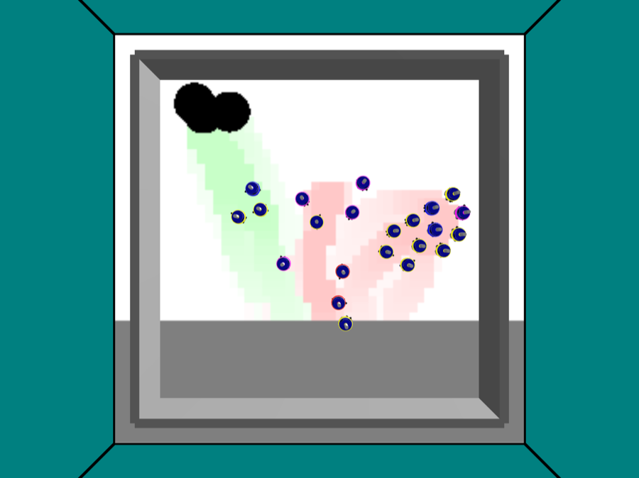
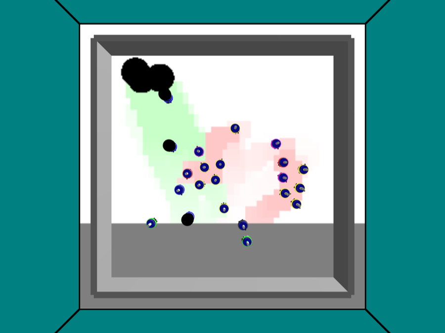
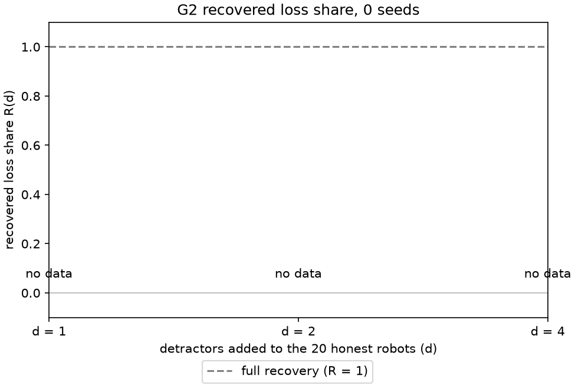
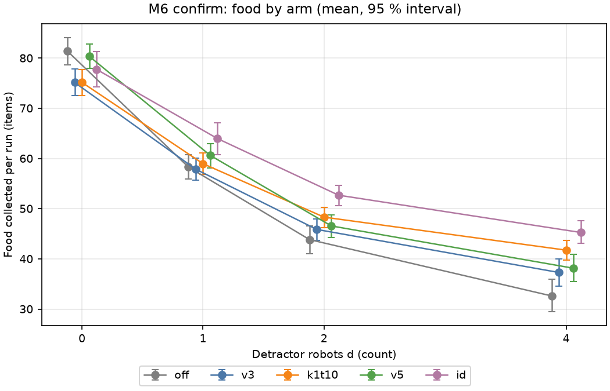
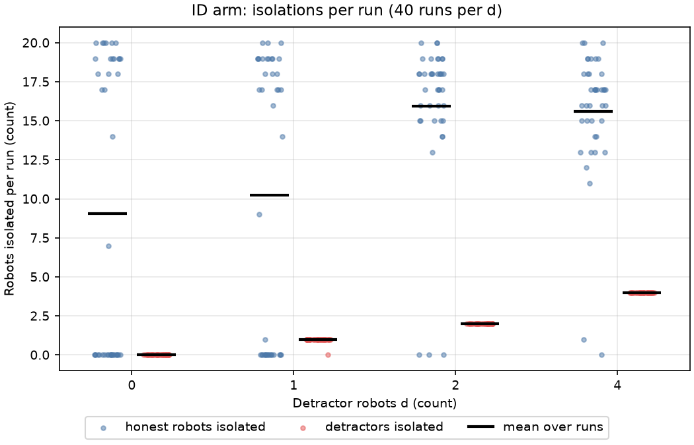
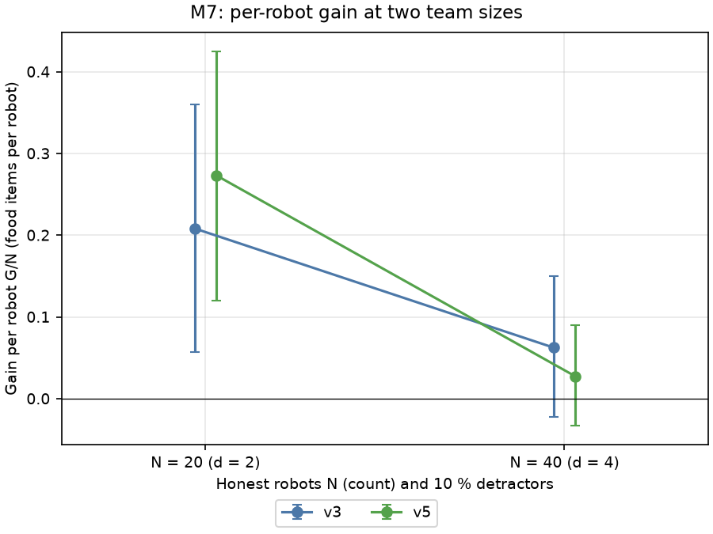

Result first
Research question 1: Yes, by the pre-registered rule. Confirm-twice with a 10 s lockout (arm k2t10) has no resolved no-attack cost: 0.125 [−0.975, 1.15] food items per run. The interval includes 0, and at most 0.975 food is lost. The gain at 2 detractors is above 0: 2.75 [0.40, 4.975]. Reported, not judged: the confirm-count main effect lowers the gain at 2 detractors, −2.7875 [−4.475, −1.1625]. Seeds 221 to 260, 40 seeds. Source: real/v5/verdict.json, real/v5/g2_stats.csv.
Research question 2: The two defenses differ. The identifier-based adapted arm beats the best defense without identifiers (arm k1t10) at 2 detractors by 4.375 [2.25, 6.45] food items per run. It pays by isolating honest robots: 9.05 per run when no attacker is present. Seeds 321 to 360, 40 seeds. Source: real/id_arm/verdict.json.
Research question 3: No for v5. The gain per honest robot falls from 0.273 (20 robots, 2 detractors) to 0.0275 (40 robots, 4 detractors). The difference is −0.246 [−0.411, −0.085]. That is worse than v5 at N = 20. It is not shown worse than v3: v5 drop minus v3 drop is −0.100 [−0.230, 0.032]. For v3 alone the result is not resolved. The no-attack cost per robot difference is not resolved, −0.010 [−0.056, 0.036]. Seeds 401 to 430, 30 seeds. Source: real/scale/verdict.json.
Headline stays v3 (D-026): recovered loss share R(2) = 0.07 [−0.02, 0.15] at 2 detractors. No gain was resolved on 10 seeds. Defense v2 (the lockout) failed its pre-registration (D-033). Source: real/g2_stats.csv, real/v2/verdict.json.
Gain G(d) = food collected with the defense on minus food collected with the defense off, at d detractors, per run. Intervals are 95 % paired bootstrap intervals. Negative at d = 0 means food lost with no attacker. Research question status: ../RQ.md, all three answered (D-051, D-054, D-055).
Each track has one judged contrast, taken from its pre-registration. Every other interval in this report is reported, not judged (D-059). Those intervals are unadjusted and descriptive.
Table 1. One row per track. Values [95 % interval] are food items per run unless stated.
| Track | Prereg file | Judged contrast | Seeds, n | Value [95 %] | Pass rule | Verdict | D-row |
|---|---|---|---|---|---|---|---|
| v3 baseline | no verdict file. Goal G2 measure (D-004) | recovered loss share R(2) | 1 to 10, 10 | 0.07 [−0.02, 0.15] | report R for d = 1, 2, 4 with 10-seed error bars | null, no gain resolved | D-026 |
| v2 lockout | prereg/defense_v2_lockout.md | G(2) and the d = 0 cost, t_lock 10 | 11 to 30, 20 | G(2) 4.05 [0.85, 7.25]. Cost −6.7 [−9.7, −3.85] | G(2) lower bound above 0, and the cost upper bound not below 0 | FAIL | D-033 |
| M5 confirm-twice | prereg/defense_v5.md | G(2) and the d = 0 cost, arm k2t10 | 221 to 260, 40 | G(2) 2.75 [0.40, 4.975]. Cost 0.125 [−0.975, 1.15] | same rule as v2 | PASS | D-051, D-057 |
| M6 identifier arm | prereg/defense_id_arm.md | F(2, id) minus F(2, k1t10) | 321 to 360, 40 | 4.375 [2.25, 6.45] | interval excludes 0 | differs | D-054 |
| M7 scale | prereg/scale.md | gain per robot, N = 40 minus N = 20, per arm | 401 to 430, 30 | v3 −0.1458 [−0.3175, 0.0234]. v5 −0.2458 [−0.4108, −0.085] | interval excludes 0 | v3 not resolved. v5 scales worse, worse than itself at N = 20 | D-055 |
Sources: real/g2_stats.csv, real/v2/verdict.json, real/v5/verdict.json, real/id_arm/verdict.json, real/scale/verdict.json.

Figure 1. Cost at 0 detractors (x) against gain at 2 detractors (y) per arm, with 95 % intervals. Colour is the rule, shape is the seed block, so compare within one marker shape. Why: it sets every arm on one plane, and the arm that sits closest to zero cost and the top gain depends on the block. Source: real/final.
Labels: circle = M5 confirm, seeds 221 to 260. Square = M6 confirm, seeds 321 to 360. v3 = confirm count 1, no lockout. k1t10 = confirm count 1, lockout 10 s. k2t0 = confirm count 2, no lockout. v5 = confirm count 2, lockout 10 s. id = identifier adapted arm. Only the M6 id minus k1t10 contrast at 2 detractors is judged.
Contents
| Mission | Keep pheromone foraging swarms trustworthy against false trails as they scale, change and learn. (D-034) |
|---|---|
| Vision | A chart sets our no-identifier defense beside Prof. Lu's identifier-based defense, each failure explained. (D-035) |
| Prof. Lu's line | Multiple-place foraging algorithm (2016), dynamic depots (2018), branching networks (2020), robot chains (2021, 2022). All assume honest robots. Then Luna and Lu (2024) attack with misleading trails. Their defense uses density-based spatial clustering of applications with noise, creator identifiers and a shared trail store. |
| Prof. Lu's future work | Luna and Lu 2024, robust mitigation paper, page 317, quoted from the page image:
|
| What we did | Our testbed keeps the pheromone on the floor and uses no robot identifiers and no messages. We measured what that costs and what it gains. Then we built an identifier-based adapted arm to compare. Then we doubled the swarm. |
Sources: ../PLAN.md mission block, ../decisions/2026-11-11_fable_tracks.md, ../research/lu_lineage.md.
| Arena | 5 x 5 m floor in the ARGoS (Autonomous Robots Go Swarming) simulator. The floor is a grid with a virtual pheromone sensor. A green tint shows true pheromone. A red tint shows false pheromone. |
|---|---|
| Honest robots | 20 robots. They search, follow a trail, collect food from 3 persistent sources and return to the nest. Runs last 600 s. |
| Attack | d detractors (0, 1, 2 or 4) are added on top of the 20 honest robots (D-005). Each detractor drives to a decoy, an empty disc, and waits 2 s. Then it lays a trail to the nest. The decoys number 1, 2 and 2 for d = 1, 2 and 4 (D-009). |
| Defense idea | A robot that reaches a trail end and finds no food for 15 s marks a suspect point. A mask of 0.4 m and a cone of 10° over 1.0 m keep it off that point (D-018). |
Table 2. The five defenses and the information each needs. Arm names are code labels. The k value is the confirm count. The t value is the lockout time in seconds.
| Arm | Confirm count, lockout | Messages per decision | Robot identifiers | Shared store | Per-robot memory | Central component |
|---|---|---|---|---|---|---|
| off (baseline, no defense) | not applicable | 0 | no | no | none | none |
| v3 = k1t0 | 1, 0 s | 0 | no | no | up to 16 suspect points (centroid, count), oldest dropped | none |
| k1t10 (defense v2, lockout) | 1, 10 s | 0 | no | no | same 16 points, plus a 10 s lockout after a cone abort | none |
| k2t0 (confirm only) | 2, 0 s | as k2t10 (no row in the cost-of-trust memo) | as k2t10 | as k2t10 | as k2t10, no lockout | as k2t10 |
| v5 = k2t10 | 2, 10 s | 0 | no | no | same 16 points, a point is pending below count 2, plus a 10 s lockout | none |
| id (identifier adapted arm) | not applicable | 0 in simulation. A real swarm would need a nest server or broadcast (inference) | yes, an owner identifier per grid cell | yes, a trail store in the loop functions | none, the controller suspect rule is off | yes, the loop functions act as a central trail store |
Sources: ../research/cost_of_trust.md Table 1,../prereg/defense_v5.md arm table. The id row is a draft design, marked inference in the memo.


Figure 2. Two frames of one demo run at 2 detractors with the defense off, frame 10 of 21 (left) and frame 19 of 21 (right). Why: they show true pheromone (green tint) and false pheromone (red tint) laid on the same floor. Source: real/mvp3/demo.
Floor legend: green tint = true pheromone, red tint = false pheromone (DESIGN §2.2). Capture times are not stated in the source pages.
Step 1 of 5
| What | Defense v3 (arm k1t0) against the defense off, at 0, 1, 2 and 4 detractors. |
|---|---|
| Why | Goal G2 asks how much of the lost food the defense wins back. Goal G1 asks for 80 logged runs. |
| Data | Seeds 1 to 10, 10 seeds. 4 detractor counts x 2 defense states x 10 seeds = 80 of 80 runs logged. Real simulation logs. |
Table 3. Food collected per run, defense off and on, with gain and recovered loss share R(d). Seeds 1 to 10.
| Detractors d | Food off | Food on | Loss L(d) | Gain G(d) [95 % interval] | Recovered share R(d) [95 % interval] |
|---|---|---|---|---|---|
| 0 | 75.8 | 73.9 | not defined | −1.9 [−5.0, 1.5] | not defined |
| 1 | 57.4 | 56.5 | 18.4 | −0.9 [−4.7, 2.5] | −0.05 [−0.31, 0.13] |
| 2 | 42.1 | 44.4 | 33.7 | 2.3 [−0.7, 5.2] | 0.07 [−0.02, 0.15] |
| 4 | 38.3 | 39.2 | 37.5 | 0.9 [−3.2, 5.5] | 0.02 [−0.09, 0.14] |

Figure 3. Recovered loss share of v3 at 1, 2 and 4 detractors. Why: every interval includes 0, so no recovery is resolved on 10 seeds. Source: real/g2_stats.csv.
R(d) = gain divided by loss. R = 1 is full recovery.
Reading. The v3 result is the G2 answer and it is not edited (D-026). It is null for seeds 1 to 10 only. Other blocks give the same rule other results, reported, not judged. Seeds 11 to 30 (t_lock 0 control): no-attack cost −6.15 [−8.25, −4.05]. Seeds 321 to 360: gain at 2 detractors 2.025 [0.125, 3.975] and no-attack cost −6.25 [−8.1, −4.3744]. The failure analysis pools seeds 1 to 30 into −4.73 [−6.70, −2.80]. That pooled value is post hoc, because two blocks and two code versions were joined after both were seen. Seed blocks differ, so these numbers are never subtracted from each other. Sources: real/failure_analysis.md, real/final/arm_contrasts.csv.
Step 2 of 5
Post-hoc design, confirmed on new seeds. The design follows the null v3 result (D-026), so it is confirmed on seeds 11 to 30, which no earlier step used.
| What | Defense v2 adds a lockout. After a cone abort a robot may not follow a trail again for t_lock seconds (D-028). |
|---|---|
| Why | v3 saved time at decoys but won back no food. Robots re-followed a learned false trail after about 0.6 to 0.7 s. |
| Data | Tuning seeds 107 to 116, 80 runs, picked t_lock = 10 s. Confirmation seeds 11 to 30, 20 seeds, 320 runs, used once. Control t_lock = 0 on the same seeds. |
Table 4. v2 verdict under its pre-registration. Seeds 11 to 30.
| Line | Value [95 % interval] | Reading |
|---|---|---|
| Gain at 2 detractors, t_lock 10 | 4.05 [0.85, 7.25] | passes the threshold |
| Cost at 0 detractors, t_lock 10 | −6.7 [−9.7, −3.85] | failure condition fired |
| Cost at 0 detractors, t_lock 0 control (v3 behavior) | −6.15 [−8.25, −4.05] | the cost is there without the lockout |
| Lockout alone at 0 detractors (10 s minus 0 s, defense on) | −0.55 [−3.45, 2.30] | includes 0, not resolved |
| Picked against t_lock 0 at 2 detractors, defense on | 1.7 [−1.0, 4.45] | includes 0, not resolved |
Table 5. Diagnostics that motivated the lockout, defense v3 (seeds 1 to 10, 10 seeds). Values per run at 2 detractors, defense off then on.
| Measure | Defense off | Defense on |
|---|---|---|
| Time in SEARCH (s) | 2354.0 | 3143.6 |
| Time in END_SEARCH (s) | 2007.2 | 1455.2 |
| Time in FOLLOW (s) | 4284.5 | 4105.1 |
| False-trail FOLLOW seconds | 1875.3 | 494.4 before learning that decoy, 1118.9 after |
| Gap from cone abort to the next follow, mean (s) | not applicable | 0.582 over 4057 aborts |
| Share of those gaps at most 5 s | not applicable | 0.990 |
Source: real/defense_diagnostics.csv. The gap mean is 0.568 (0 detractors), 0.748 (1) and 0.649 (4) s in the other rows.
Figure 4. The measured causal chain of the no-attack cost at d = 0. Why: it locates where the food is lost. Source: real/failure_analysis.md.
Reading. The pre-registered verdict is FAIL (D-033). The failure fired on the base defense, not on the lockout. The lockout adds no resolved cost. The cause is wrong suspects at crowded real sources: 14.45 of 14.6 wrong suspects per run sit nearest a real source, and 102.55 of 102.6 cone aborts come from those points. No retry on seeds 11 to 30. Pairing limit (risk R11): robot starts differ across cells, so the pairing on seed is partial. The layout stream is shared. Full chain in What failed and why. Sources: real/v2/verdict.json, real/failure_analysis.md.
Step 3 of 5
| What | Defense v5 needs a second independent failure at a point before the point counts (confirm count k = 2). It is crossed with the lockout (t_lock 0 or 10 s). This is a 2 x 2 design on one seed block (D-039). |
|---|---|
| Why | Research question 1. A crowd fails a real source once. A decoy fails every visit. A second failure should tell them apart. Only a 2 x 2 shows the lockout share. |
| Data | Kill check before code (D-046): predicted wrong confirmed points at d = 0 are 1.70 per run [1.20, 2.20], against a kill line of 7.2. Mechanism check on seeds 201 to 210, 40 runs. Confirmation on seeds 221 to 260, 40 seeds, 5 arms x 4 detractor counts x 40 seeds = 800 runs, check 0 failed. |
Table 6. Mechanism check, seeds 201 to 210. Active wrong points per run (the count reaches k).
| Detractors d | Arm | Active points at real sources | Active points at decoys | Cone aborts | Food |
|---|---|---|---|---|---|
| 0 | k1t10 | 11.90 | 0.00 | 27.60 | 68.40 |
| 0 | k2t10 | 1.80 | 0.00 | 3.70 | 75.70 |
| 2 | k1t10 | 4.80 | 36.60 | 103.30 | 44.90 |
| 2 | k2t10 | 0.30 | 18.80 | 48.30 | 42.40 |
Table 7. Gain G(d) of each arm against the defense off, food per run [95 % interval]. Seeds 221 to 260.
| Arm | d = 0 | d = 2 | d = 4 |
|---|---|---|---|
| k1t0 (v3 rule) | −2.7 [−4.5, −0.85] | 4.575 [2.325, 6.825] | 2.725 [0.2, 5.225] |
| k1t10 | −3.55 [−5.4, −1.725] | 5.05 [2.025, 7.975] | 7.375 [4.75, 9.9256] |
| k2t0 | −0.25 [−1.2, 0.65] | 1.3 [−1.275, 3.8] | 2.1 [−0.225, 4.4006] |
| k2t10 (v5, primary arm) | 0.125 [−0.975, 1.15] | 2.75 [0.4, 4.975] | 5.0 [2.7744, 7.0] |
Table 8. Main effects of the 2 x 2 [95 % interval]. E_k = effect of k = 2 against k = 1. E_t = effect of the 10 s lockout against none. I = interaction. Reported, not judged.
| Detractors d | E_k | E_t | I |
|---|---|---|---|
| 0 | 3.0625 [1.5375, 4.625] | −0.2375 [−1.3375, 0.825] | 1.225 [−0.65, 3.075] |
| 2 | −2.7875 [−4.475, −1.1625] | 0.9625 [−0.4128, 2.3628] | 0.975 [−1.625, 3.65] |
Chart: the circles in Figure 1 are this block (seeds 221 to 260).
Reading. The verdict is PASS for the primary arm k2t10 (D-051). Its gain interval is above 0 and its no-attack cost interval includes 0. The cost is not resolved: at most 0.975 food is lost. The main effects are reported, not judged.
The best arm without identifiers by the D-050 rule is k1t10. This is a rule pick, not a resolved difference. Its mean food at d = 2 on seeds 221 to 260 is 46.1, then k1t0 45.6, then k2t10 43.8 (D-052). Sources: real/v5/verdict.json, real/v5/mechanism.md, real/v5/g2_stats.csv.
Step 4 of 5
| What | An identifier-based arm adapted from Luna and Lu 2024 to our floor grid (D-040). It keeps a shared trail store. It clusters trail ends with density-based spatial clustering of applications with noise (distance 0.3 m, minimum points 2). It checks travel time with a margin of 5.4. It isolates a creator after 5 strikes. |
|---|---|
| Why | Research question 2 and the vision chart. How far does more information (identifiers, a shared store) go beyond a no-identifier defense? |
| Data | Arm check on seeds 301 to 310 (D-043). Confirmation on seeds 321 to 360, 40 seeds, 5 arms x 4 detractor counts x 40 seeds = 800 runs, check 0 failed. The comparison arm k1t10 was fixed by rule before the M6 runs (D-050, D-052). |
Table 9. Gain G(d) against the defense off, food per run [95 % interval]. Seeds 321 to 360. Defense-off food: 81.4, 58.3, 43.85, 32.625 at d = 0, 1, 2, 4.
| Arm | d = 0 | d = 1 | d = 2 | d = 4 |
|---|---|---|---|---|
| v3 | −6.25 [−8.1, −4.3744] | −0.425 [−3.0, 2.075] | 2.025 [0.125, 3.975] | 4.675 [2.325, 6.95] |
| k1t10 | −6.225 [−8.275, −4.2494] | 0.675 [−1.2, 2.55] | 4.475 [2.15, 6.7506] | 9.125 [7.05, 11.25] |
| v5 | −1.025 [−2.175, 0.025] | 2.325 [0.275, 4.3] | 2.725 [0.675, 4.875] | 5.525 [3.875, 7.375] |
| id | −3.625 [−5.375, −2.025] | 5.675 [2.925, 8.3] | 8.85 [6.625, 11.1] | 12.65 [10.375, 14.975] |

Figure 5. Mean food per run by arm at 0, 1, 2 and 4 detractors, with 95 % intervals. Why: it shows the point estimates of all arms on one axis. Only the id minus k1t10 contrast at 2 detractors is judged. Source: real/final.
Labels: off = defense off. v3 = confirm count 1, no lockout. k1t10 = confirm count 1, lockout 10 s. v5 = confirm count 2, lockout 10 s. id = identifier adapted arm.
Table 10. Robots isolated per run by the id arm. Seeds 321 to 360.
| Detractors d | Detractors isolated | Detractors isolated at run end | Honest robots isolated |
|---|---|---|---|
| 0 | 0.0 | 0.0 | 9.05 |
| 1 | 0.975 | 0.75 | 10.25 |
| 2 | 2.0 | 1.375 | 15.925 |
| 4 | 4.0 | 2.05 | 15.6 |

Figure 6. Honest robots and detractors isolated per run by the id arm, one dot per run. Why: the honest-robot dots form two groups, one near 0 and one from about 13 to 20, so the mean hides two behaviors. Source: real/final.
Labels: id = identifier adapted arm. Black bar = mean over 40 runs. Group description read by eye from the plot.
Reading. The verdict is "differs" (D-054). The id arm beats k1t10 at d = 2 by 4.375 [2.25, 6.45]. The arm worked: 0 of 40 seeds at d = 2 had no detractor isolated, so the failure rule did not fire. The price is trust in honest robots. The id arm isolates 9.05 honest robots per run at d = 0 and 15.925 at d = 2, out of 20. v5 has the smallest no-attack cost point estimate, −1.025 [−2.175, 0.025] on this block and 0.125 [−0.975, 1.15] on the M5 block. No paired interval compares it with the other arms. The arm check on seeds 301 to 310 showed the same pattern: at d = 2, 9 of 10 seeds isolated 16 to 19 honest robots, and all 10 isolated both detractors (real/id_arm/arm_check.csv). The judged gain was measured with this isolation level. See Figure 1 for both blocks, compared within one marker shape. Sources: real/id_arm/verdict.json, real/id_arm/contrast.csv, real/final/arm_contrasts.csv.
Step 5 of 5
| What | The same 5 x 5 m arena with 20 or 40 honest robots (N). Detractors are 10 %: 2 at N = 20 and 4 at N = 40. Frozen values are not re-tuned at 40. |
|---|---|
| Why | Research question 3 and the mission word "scale". Doubled density also tests the crowding root cause (D-042). |
| Data | Seeds 401 to 430, 30 seeds. Arms off, v3, v5 (v5 fixed by rule before any M6 or M7 result, D-053. D-058 corrects the stated reason: k2t0 also has a d = 0 interval that includes 0. The pick stays). 3 arms x 2 team sizes x 2 detractor levels x 30 seeds = 360 runs, check 0 failed. The identifier arm is not scaled. |
Table 11. Gain per honest robot, G/N, in food items per robot [95 % interval of the N = 40 minus N = 20 difference]. Seeds 401 to 430.
| Arm | N = 20, d = 2 | N = 40, d = 4 | Difference [95 % interval] | Verdict |
|---|---|---|---|---|
| v3 | 0.2083 | 0.0625 | −0.1458 [−0.3175, 0.0234] | not resolved |
| v5 | 0.2733 | 0.0275 | −0.2458 [−0.4108, −0.085] | scales worse, worse than itself at N = 20 |
Not shown worse than v3: v5 drop minus v3 drop is −0.100 [−0.230, 0.032] (real/scale/root_cause.md). Reported, not judged.
Table 12. Other lines, reported with no pass or fail. Seeds 401 to 430.
| Line | v3 | v5 |
|---|---|---|
| No-attack cost per robot, N = 20 and N = 40 | −0.225 and −0.0467 | 0.0217 and 0.0117 |
| Difference N = 40 minus N = 20 [95 % interval] | 0.1783 [0.0658, 0.295] | −0.01 [−0.0558, 0.0358] |
| Wrong source suspects per robot at d = 0, N = 20 and N = 40 | 0.6733 and 0.4775 | 0.7667 and 0.4842 |
| Wrong source suspects per robot at 10 % detractors, N = 20 and N = 40 | 0.2617 and 0.1808 | 0.2683 and 0.1792 |

Figure 7. Gain per honest robot at 20 robots with 2 detractors and at 40 robots with 4 detractors, for v3 and v5. Why: the v5 mean falls from 0.2733 to 0.0275, a drop of −0.2458 [−0.4108, −0.085], and the v3 drop is not resolved. Source: real/final.
Labels: v3 = confirm count 1, no lockout. v5 = confirm count 2, lockout 10 s. N = number of honest robots. The error bars come from the figure script. Their values are not saved in a table.
Reading. The M7 verdict is "v3 not resolved, v5 scales worse" (D-055). "Scales worse" means worse than itself at N = 20. The congestion rule did not fire. Defense-off food per robot at no attack is 3.9533 at N = 20 and 2.4183 at N = 40. The ratio is 0.6117, above the 0.5 line. The no-attack cost per robot difference of v5 is not resolved, −0.01 [−0.0558, 0.0358]. The gain per robot falls. The mechanism-level cause is private confirmation, see the M7 root cause (D-056). Sources: real/scale/verdict.json, real/scale/contrast.csv.
This section sets what each defense needs beside what it cost on our testbed. It runs no new experiments. Every number is copied from a saved file.
Table 13. Information each defense needs. Literature rows are read from the papers named. Our rows are from our design files.
| Defense | Messages per decision | Robot identifiers | Shared store | Per-robot memory | Central component |
|---|---|---|---|---|---|
| Blockchain swarm (Strobel et al. 2018) | One vote transaction every 5 ticks. About 160 bytes per transaction against 2 or 4 bytes classically | Yes, a public key per robot | Yes, a blockchain copy per robot | Full chain copy, about 10 MB or 4 MB per 15 min run | Setup only |
| Luna and Lu 2024, robust mitigation | Not stated. Trails with creator identifiers must reach one place (inference) | Yes, a creator identifier per waypoint | Yes (inference) | Not stated who holds strikes and travel times | Not stated, implied (inference) |
| Luna and Lu 2024, quarantine paper | Not stated in the abstract | Not stated in the abstract | Not stated. Regions merge by distance to save storage | Quarantine regions around fakes | Not stated in the abstract |
| Cautionary pheromone (Aswale et al. 2022) | 0 | No | No, a layer in the same grid | A patience value per ant | None |
| Our v3, k1t10, k2t0, v5 | 0 | No | No | 16-point suspect queue, see Table 2 | None |
| Our id arm | 0 in simulation | Yes | Yes | None | Yes |
Table 14. Measured cost on our testbed. G(0) = no-attack cost. G(2) = gain at 2 detractors. Food items per run [95 % interval]. Never subtract across blocks.
| Arm | Seeds | F(0, off) | F(0, on) | G(0) | G(2) | Honest robots isolated per run, d = 0 and d = 2 |
|---|---|---|---|---|---|---|
| v3 rule (k1t0) | 1 to 10 | 75.8 | 73.9 | −1.9 [−5.0, 1.5] | 2.3 [−0.7, 5.2] | not applicable |
| v3 rule (t_lock 0 control) | 11 to 30 | 81.35 | 75.2 | −6.15 [−8.25, −4.05] | 2.35 [−1.9, 6.35] | not applicable |
| k1t0 | 221 to 260 | 77.55 | 74.85 | −2.7 [−4.5, −0.85] | 4.575 [2.325, 6.825] | not applicable |
| v3 | 321 to 360 | 81.4 | 75.15 | −6.25 [−8.1, −4.3744] | 2.025 [0.125, 3.975] | not applicable |
| k1t10 (v2) | 11 to 30 | 81.35 | 74.65 | −6.7 [−9.7, −3.85] | 4.05 [0.85, 7.25] | not applicable |
| k1t10 | 221 to 260 | 77.55 | 74.0 | −3.55 [−5.4, −1.725] | 5.05 [2.025, 7.975] | not applicable |
| k1t10 | 321 to 360 | 81.4 | 75.175 | −6.225 [−8.275, −4.2494] | 4.475 [2.15, 6.7506] | not applicable |
| k2t10 (v5) | 221 to 260 | 77.55 | 77.675 | 0.125 [−0.975, 1.15] | 2.75 [0.4, 4.975] | not applicable |
| v5 | 321 to 360 | 81.4 | 80.375 | −1.025 [−2.175, 0.025] | 2.725 [0.675, 4.875] | not applicable |
| id | 321 to 360 | 81.4 | 77.775 | −3.625 [−5.375, −2.025] | 8.85 [6.625, 11.1] | 9.05 and 15.925 |
Sources: real/final/arm_contrasts.csv, real/id_arm/verdict.json, ../research/cost_of_trust.md. Only the id minus k1t10 contrast at 2 detractors is judged. All other intervals are reported, not judged.
Reading.
Owner rule: "if we fail we need to find why we have failed."
Table 15. Candidate causes of the no-attack cost. Per run, t_lock 0, d = 0, seeds 11 to 30.
| Candidate | Measurement | Verdict |
|---|---|---|
| Cone aborts on true trails | 102.6 aborts, 102.55 from a source point, 102.0 within 1.5 m of a source | supported |
| Lockout blocks re-entry | food −0.55 [−3.45, 2.30], aborts −72.4 [−89.15, −55.5], abort-to-pickup +16.9 s [1.85, 32.03] | not supported as the cause |
| Suspect masks cover real sources | 9.7 (66 %) within 0.40 m of the centre, 12.8 (89 %) within 0.65 m | supported |
| Fewer pickups | pickups −7.2 [−9.35, −5.2], carrying −247.8 s [−307.3, −191.8] | supported |
| Crowding at real sources | 2.14 robots near a failed peak against 1.48 near a pickup | supported as an association, not shown causal |
| Peak offset | 0.41 m against 0.32 m | not supported as the main cause |
Root cause (supported at d = 0). The end test cannot tell a crowded true source from a decoy. About 1 peak in 4 at a real source ends with no food in 15 s. The test makes each such peak a suspect. The mask then hides the source. Memory has no expiry below 16 points, so a wrong point stays for the run. See Figure 4. Depletion is ruled out by design. Source: real/failure_analysis.md.
Root cause of the M7 result
Root cause (D-056): private, same-robot confirmation does not scale with robot density. Defense v5 needs the same robot to fail twice at a decoy. Visits per decoy stay about equal from N = 20 to N = 40, but they spread over twice the robots. So each robot meets each decoy less often. Decoy peaks per robot per decoy fall from 3.55 to 1.98 (defense off). The protected robot-time share (cover_time) falls from 0.244 to 0.126. Source: real/scale/root_cause.md.
Table 16. Verdict per candidate cause of the M7 result. Seeds 401 to 430. Numbers are N = 40 minus N = 20 differences [95 % interval]. Reported, not judged.
| Candidate | Key number | Verdict |
|---|---|---|
| (a) Slower or rarer confirmation per decoy | cover_time −0.118 [−0.134, −0.102]. False follow seconds saved per robot +12.29 [6.76, 17.82] (less saved). v5 over v3 share of robots with a decoy point active −0.210 [−0.260, −0.163] | supported |
| (b) Attack per decoy doubles | Trail refresh +2.25 [1.63, 2.83]. Fixed N = 20, seeds 221 to 260 (not a paired contrast): gain per robot 0.138 at d = 2 and 0.250 at d = 4. The point estimate rises | not supported |
| (c) Crowding raises wrong source suspects | Wrong source points activated −0.036 [−0.061, −0.013] at d = 0 and −0.019 [−0.038, −0.003] at 10 % detractors | not supported |
| (d) Loss per robot shrinks, so less to recover | Loss per robot −0.766 [−0.948, −0.580]. Drop from loss −0.107 [−0.182, −0.043]. Drop from recovered share −0.139 [−0.243, −0.032] | unclear by the rule, a real part shared with v3 |
| (e) Lockout side effects grow with density | Lockout seconds after a true-trail abort −7.18 [−9.03, −5.44]. v5 drop minus v3 drop −0.100 [−0.230, 0.032] | not supported |
| (f) Saved time does not become food | v5 saves less time (+12.29), so (a) applies | not supported for v5 |
Pickups gained per robot fall from 0.247 to 0.011. The recovered share falls from 0.140 to 0.023.
Disclosure from the memo. The verdict rules for (b) and (c) were written after some numbers were seen. Those two verdicts are not blind.
Limit stated by the memo. The food-level contrast "v5 drop minus v3 drop" is −0.100 [−0.230, 0.032]. It is not resolved. The cause is resolved at the mechanism level, not as a separate food number. Candidates (a) and (b) are confounded inside the M7 runs, because detractors per decoy rise from 1 to 2 with N. No k1t10 or k2t0 arm exists at N = 40.
The id arm isolated honest robots at every detractor count (Table 10). Its verdict is "differs" and its failure rule did not fire.
| Item | Why | Source |
|---|---|---|
| Dynamic food | Prof. Lu names dynamic environments. A moving food patch makes a stale trail look false. Needs a new food model (D-042). | Luna and Lu 2024, p. 317 |
| A learned suspect test | Prof. Lu names machine learning. The 15 s end test confuses a crowded real source with a decoy. | Luna and Lu 2024, p. 317, real/failure_analysis.md |
| Quarantine regions | The Luna and Lu 2024 quarantine paper blocks the bait, not the robot. The masks already cover the source centre in 66 % of wrong suspects (D-041). | ../research/lu_lineage.md |
| Shared confirmation without identifiers | The M7 root cause is that confirmation is private. A failure leaves a short-lived local mark, a pickup clears it nearby, and a point confirms when marks from any robots reach k. This pools evidence without identifiers. The benefit is inference. No replay or run has tested it (D-056). | real/scale/root_cause.md §7, option A |
Table 17. Seven papers, in reading order.
| # | Paper | Why read it |
|---|---|---|
| 1 | Hecker and Moses 2015, "Beyond pheromones" (Swarm Intelligence) | The central-place foraging algorithm, the honest baseline of the line. |
| 2 | Lu, Hecker and Moses 2016, multiple-place foraging algorithm (IEEE/RSJ International Conference on Intelligent Robots and Systems) | Prof. Lu's first step. Why one nest does not scale. |
| 3 | Aswale et al. 2022, "Hacking the Colony" (Autonomous Agents and Multiagent Systems) | The attack we copy, and a defense with no identifiers. |
| 4 | Luna and Lu 2024, quarantine (International Conference on Computer, Control and Robotics) | His first defense. Block the bait, not the robot. Full text needed. |
| 5 | Luna and Lu 2024, detection and mitigation (International Conference on Ubiquitous Robots) | Density-based spatial clustering of applications with noise on trails first appears. Full text needed. |
| 6 | Luna and Lu 2024, robust mitigation (Towards Autonomous Robotic Systems) | The method our id arm adapts. Future work on page 317. |
| 7 | Strobel et al. 2018, Byzantine robots and blockchain (Autonomous Agents and Multiagent Systems) | The high-cost end of the cost-of-trust table. |
Source: ../decisions/2026-11-11_fable_tracks.md reading guide. Density-based spatial clustering of applications with noise was not replaced by e-means because e-means needs a cluster count and has no noise label (D-045, ../research/emeans.md).
../prereg/defense_v2_lockout.md, ../prereg/defense_v5.md, ../prereg/defense_id_arm.md, ../prereg/scale.md.verdict.json. A failed verdict gets a root-cause memo (goal G3, D-036).Table 18. Held-out seeds. Each confirm block was used once.
| Seeds | Used for |
|---|---|
| 1 to 10 | 80-run sweep, v3 (goals G1, G2) |
| 101 to 103 | Pheromone tuning and defense tuning |
| 104 to 106 | Keep-A judgement (strategy A, floor grid) |
| 107 to 116 | v2 tuning |
| 11 to 30 | v2 confirmation |
| 201 to 210 | M5 mechanism check |
| 221 to 260 | M5 confirmation |
| 301 to 310 | M6 arm check |
| 321 to 360 | M6 confirmation |
| 401 to 430 | M7 scale confirmation |
| 900 | M6 and M7 smoke runs, a throwaway block (D-048) |
| 1 and 11 | Invariance reruns (exempt from the one-use rule) |
Sources: D-029, D-043, D-048, D-010. Links: results index, plan, research questions.